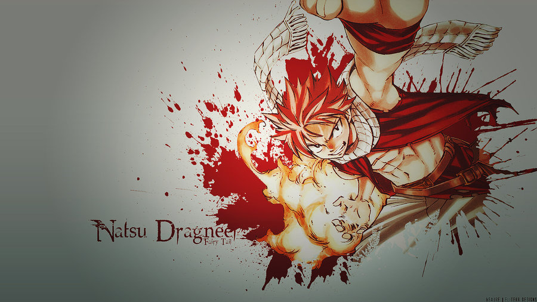

Natsu Dragneel
"Salamander" Natsu Dragneel is a fictional character and the main male protagonist of the Fairy Tail manga
and anime series created by Hiro Mashima Natsu is a lean, muscular young man of average height with a slightly tan skin tone, black eyes, spiky pink-colored hair, and has abnormal sharp canines;[10] Natsu has a scar on the right side of his neck, hidden by his scarf.[11] Following his intense battle with the Rogue Cheney of the future, Natsu gains a cross-shaped scar on the left side of his abdomen, a result of the two fatal wounds the man dealt to him during their altercations.[12] He later attains a new scar, this one being a jagged blemish on his right cheek, which he gained following his battle with Zeref.
Gray Fullbuster:
Gray's most prominent feature is his spiky black-colored hair.He has dark blue eyes, and his body is toned and muscular.Unlike almost all other characters, Gray does not consistently wear the same type of clothes
Laxus Dreyar:
Laxus is a very tall and muscular young man with orange eyes.his hair is slicked back, its numerous spiky strands pointing backwards, though some falls down in a small tuft on his forehead.
Zeref Dragneel:
Despite being hundreds of years old, Zeref has the appearance of a young man. He wears high-collared red and tan robes with gold trim, along with a large, flowing white toga draped around his torso. He has short black hair, dark eyes, and abnormally sharp canines.
Lucy Heartfilia
Lucy has brown eyes and shoulder-length blonde hair that is usually tied by ribbons in a variety of colors in a small ponytail to the right side of her head with the rest of the hair loose.However, in the year X791 she appears to keep her hair up more often in pigtails.
Erza Scarlet
Erza is a young woman with long, scarlet hair and brown eyes. She lost her right eye as a child and now has an artificial one which was created by Porlyusica.She has a slender, voluptuous figure that Lucy Heartfilia described as "amazing."
Makarov Dreyar:
Makarov is an extremely short, elderly man. He has black eyes and is growing bald with only the outer rims of his head containing white hair.[3] He also has a thick white mustache. He has a black stamp of the Fairy Tail guild mark that covers his entire chest area.